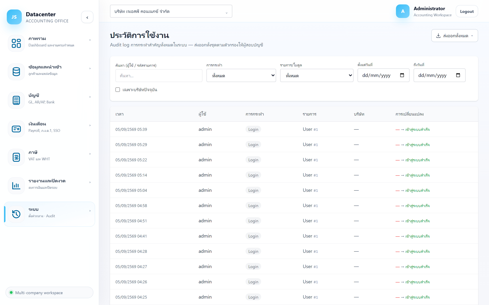

ประวัติการใช้งาน (Audit log)
บันทึกการกระทำสำคัญทั้งหมดในระบบ — ใคร ทำอะไร กับอะไร เมื่อไร ค่าเดิมเป็นอะไร เปลี่ยนเป็นอะไร พร้อมส่งออกทั้งชุดตามตัวกรองให้ผู้สอบบัญชี
ระบบออกแบบให้ผู้ที่มีสิทธิ์ในบริษัทนั้นแก้ไข/ลบข้อมูลได้เลยเพื่อความคล่องตัว — แต่ ทุกการเปลี่ยนแปลงถูกบันทึกไว้ที่นี่ ตรวจย้อนหลังได้เสมอ นี่คือกลไกควบคุมแทนการอนุมัติ
1. การเข้าใช้งาน
เปิดเมนู ระบบ → ประวัติการใช้งาน — แสดงทุกบริษัทที่คุณมีสิทธิ์ เว้นแต่จะติ๊กกรองเฉพาะบริษัทปัจจุบัน
2. ตัวกรอง

| ตัวกรอง | ใช้อย่างไร |
|---|---|
| ค้นหา (ผู้ใช้ / รหัสรายการ) | พิมพ์ชื่อผู้ใช้ หรือรหัสของรายการที่ต้องการตาม |
| การกระทำ | กรองตามชนิดการกระทำ (สร้าง / แก้ไข / ลบ / เข้าสู่ระบบ ฯลฯ) |
| รายการ/โมดูล | กรองตามชนิดข้อมูลที่ถูกกระทำ เช่น งาน, สินทรัพย์, ผู้ใช้ |
| ตั้งแต่วันที่ / ถึงวันที่ | จำกัดช่วงเวลา |
| เฉพาะบริษัทปัจจุบัน | ติ๊กเพื่อดูเฉพาะบริษัทที่เลือกอยู่ที่แถบด้านบน |
3. อ่านตาราง
| คอลัมน์ | ความหมาย |
|---|---|
| เวลา | วันเวลาที่เกิดเหตุการณ์ |
| ผู้ใช้ | ชื่อผู้ใช้ที่ทำ — อ้างอิงด้วยชื่อผู้ใช้ (จึงแก้ชื่อผู้ใช้ทีหลังไม่ได้) |
| การกระทำ | ป้ายบอกชนิดการกระทำ สีต่างกันตามชนิด |
| รายการ | ชนิดข้อมูลและรหัสอ้างอิง เช่น User #1 |
| บริษัท | บริษัทที่เกี่ยวข้อง (— ถ้าเป็นการกระทำระดับระบบ เช่น เข้าสู่ระบบ) |
| การเปลี่ยนแปลง | ชื่อช่องที่เปลี่ยน แล้วแสดง ค่าเดิม → ค่าใหม่ |
สีแดงคือค่าก่อนแก้ สีเขียวคือค่าหลังแก้ — ทำให้ตอบคำถาม “ยอดนี้เคยเป็นเท่าไร ใครแก้” ได้โดยไม่ต้องเดา
4. ส่งออกให้ผู้สอบบัญชี
ปุ่ม ส่งออกทั้งหมด มุมขวาบน ส่งออก ทั้งชุดตามตัวกรองที่ตั้งอยู่ (ไม่ใช่แค่หน้าที่เห็นบนจอ) เป็น Excel / CSV / PDF
ตั้งตัวกรองให้ตรงกับที่ผู้สอบบัญชีขอ (ช่วงวันที่ + บริษัท + โมดูล) แล้วกดส่งออกครั้งเดียว — ได้แฟ้มหลักฐานที่ตรงคำขอโดยไม่ต้องคัดลอกทีละแถว
5. ใช้ตรวจสอบอะไรได้บ้าง
| คำถาม | วิธีหา |
|---|---|
| ใครลบงาน/ข้อมูลนี้ไป | กรองการกระทำ = ลบ แล้วดูคอลัมน์ผู้ใช้และเวลา |
| ยอดนี้ถูกแก้เมื่อไร จากเท่าไรเป็นเท่าไร | ค้นด้วยรหัสรายการ แล้วอ่านคอลัมน์การเปลี่ยนแปลง |
| มีใครเข้าระบบนอกเวลาทำการหรือไม่ | กรองการกระทำ = เข้าสู่ระบบ แล้วดูเวลา |
| งวดที่ปิดไปแล้วถูกเปิดใหม่หรือเปล่า | กรองโมดูลที่เกี่ยวกับการปิดงวด แล้วดูช่วงวันที่ |
| ใครแก้สิทธิ์ผู้ใช้ | กรองรายการ/โมดูล = ผู้ใช้ |
6. ปัญหาที่พบบ่อย
| อาการ | สาเหตุและวิธีแก้ |
|---|---|
| ไม่เห็นรายการของบริษัทที่ต้องการ | บัญชีของคุณไม่มีสิทธิ์เข้าถึงบริษัทนั้น — ขอสิทธิ์ที่ ผู้ใช้งานระบบ |
| รายการเยอะจนหาไม่เจอ | ใช้ตัวกรองวันที่ + โมดูลร่วมกันให้แคบลงก่อน |
| คอลัมน์การเปลี่ยนแปลงว่าง | การกระทำบางชนิดไม่มีค่าก่อน/หลัง เช่น เข้าสู่ระบบ หรือการสร้างรายการใหม่ |
| ไม่พบร่องรอยการแก้ที่คาดว่าเกิดขึ้น | อาจถูกแก้ที่ Express (นอกระบบนี้) แล้วนำเข้าใหม่ — ระบบบันทึกได้เฉพาะการกระทำในระบบนี้ |
กลับไปที่ ภาพรวมระบบ เพื่อดูเมนูทั้งหมด